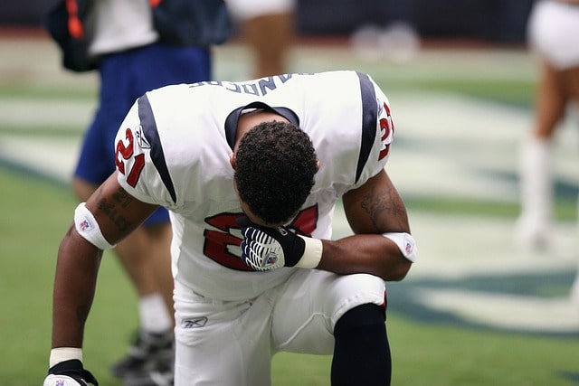

NFL
• Jul 5th '22
The Houston Texans' once-promising season has taken a sharp downturn, with internal tensions and external pressures mounting at a troubling pace. What began as a hopeful campaign has now been overshadowed by a series of high-profile disputes between players, coaches, and management. Frustrations boiled over in recent weeks, particularly after a string of close losses that exposed a lack of discipline on the field. In the locker room, reports of growing animosity between key veterans and younger players have surfaced, with leadership struggles further complicating the team’s chemistry. Tensions reached a boiling point after a controversial loss to the Colts, where star wide receiver Brandin Cooks was seen exchanging heated words with head coach Lovie Smith on the sideline. The loss dropped the Texans to the bottom of their division, and despite some flashes of individual brilliance, the team has been plagued by inconsistent play and mounting frustration. With rumors swirling about potential changes in the front office and coaching staff, the Texans are at a crossroads, and the once-promising season is now in danger of collapsing entirely. If the team hopes to salvage any semblance of success, they'll need to address these internal conflicts quickly and refocus their energy on turning around a season that is quickly slipping away.

NFL
• Jul 17th '22
In a season filled with personal milestones and remarkable performances, Houston Texans’ star quarterback, David Mills, came agonizingly close to achieving his ultimate goal—winning a championship. Mills, who had been the face of the team’s resurgence, led the Texans on a spectacular playoff run, defying expectations with key victories against powerhouse teams in the league. His leadership and poise under pressure were unmatched, earning him widespread recognition and praise from fans and pundits alike. Throughout the playoffs, Mills played with unmatched determination, throwing for over 1,200 yards and delivering game-winning passes in clutch moments. However, despite his remarkable individual efforts, the Texans’ dream of a championship was dashed in the final moments of the AFC Championship game, where they narrowly lost to the Kansas City Chiefs in a heart-stopping, last-second field goal. Mills’ heartbreak was evident, as his team’s loss overshadowed his personal triumphs. The quarterback’s stellar playoff run was a testament to his growth and resilience, but ultimately, the elusive championship remained out of reach. While the loss stung, Mills has already vowed to return stronger, driven by the memory of how close he came and the belief that his time to lift the Lombardi Trophy is still ahead.
Debate
• Jul 5th '22
As the clock ticks down on his final season, Houston Texans head coach Lovie Smith finds himself under immense pressure to turn around a struggling franchise before his tenure comes to a bitter end. With rumors swirling that the front office is prepared to part ways at season’s end, Smith’s focus is squarely on proving that he can still lead the Texans to success, but time is running out. The team, plagued by inconsistent play and internal unrest, has underperformed for several years, and many believe Smith's methods and leadership have failed to resonate with his players. However, Smith is not backing down—he is pushing his team harder than ever, implementing bold changes and calling on his veterans to step up. Despite the mounting pressure, Smith has remained resolute, putting together a game plan designed to reignite the Texans' playoff aspirations. If the team can rally behind their coach and finish the season strong, Smith may just be able to save his job and restore pride to a franchise desperate for a championship contender. But with each game more critical than the last, the upcoming weeks will be a make-or-break test of Smith’s ability to inspire, innovate, and deliver the results that are desperately needed.